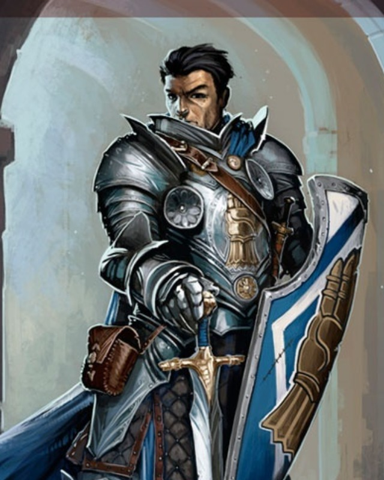

Christopher
Champion / obronca / tarcza
Realna postac z data/heroes/christopher.json. Utrzymaj front i pilnuj, zeby walka nie przerwala sledztwa.
HP 21AC 15DiplomacyReligion
Atrybuty STR +3, DEX +2, CON +3, INT +0, WIS +0, CHA +1
Biegłości Perception trained; Fort expert, Ref trained, Will expert
Bronie i pancerz simple/martial/unarmed trained; all armor trained
Skille trained Diplomacy, Intimidation, Medicine
Skille śledcze Occultism, Religion
Rola testów obrona, medycyna, wiara, presja moralna
Snapshot
- Class: Champion, lvl 1.
- Ancestry: Human, versatile heritage.
- Gear: longsword, scale mail, tower shield.
- Feat/status: Deity's Domain, Toughness, Ranged Reprisal.
Skille
- Diplomacy: Elna, Mira, Serai, wahajacy sie straznicy.
- Intimidation: nacisk na ludzi Odrana.
- Medicine: Tovin i ranni.
- Religion: undead, przysiega, krypta.
Taktyka
- Oslaniaj tych, ktorzy badaja dowody albo rozmawiaja.
- Ustawiaj tarcze tak, by Kord mogl atakowac obok ciebie.
- W mlynie trzymaj droge do Tovina.
- W krypcie chron Lorielen i Freye przed zjawami.
Sledztwo
- Nie pozwol Odranowi zamienic winy w rozkaz.
- Religion i Diplomacy wspieraja pokojowy final.
- Intimidation dziala najlepiej po znalezieniu dowodow.
Pytania do NPC
- Do Odrana: "Czy twoja wladza obejmuje lamanie przysiag?"
- Do Serai: "Kogo mam oslaniac, zeby przysiega mogla zostac odnowiona?"
- Do straznikow: "Czy chcecie umrzec za klamstwo kasztelana?"
Motywacja: przysiega jest zobowiazaniem, nie dekoracja.